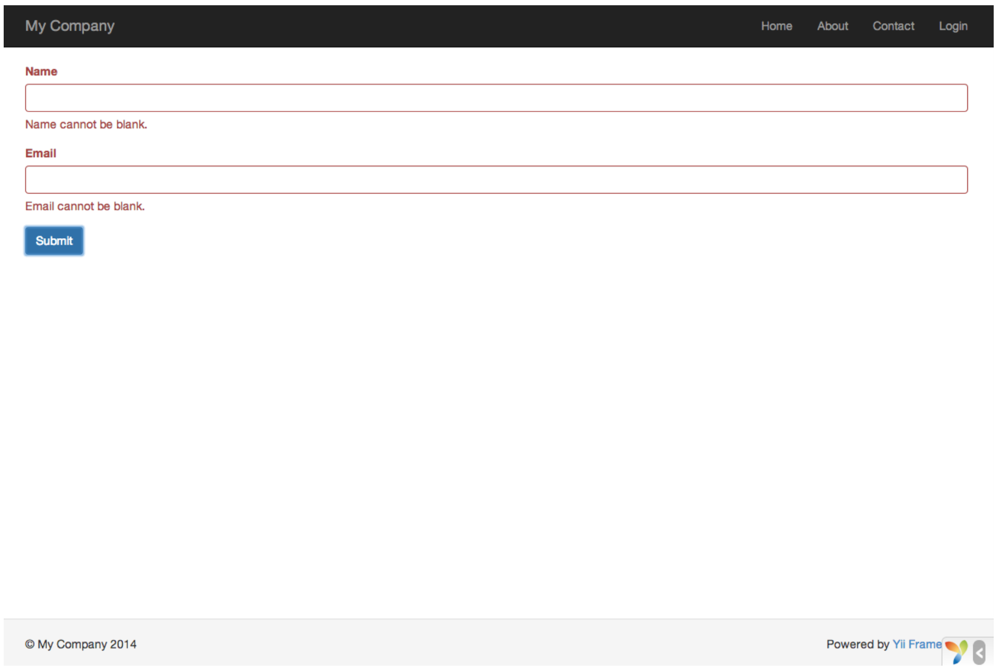
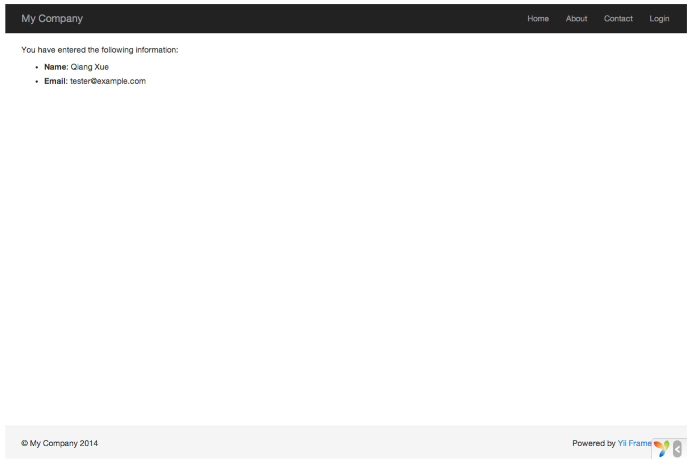

Lavorare con i moduli¶
Questa sezione descrive come creare una nuova pagina con un modulo per ottenere dati/informazioni dall'utente. La pagina visualizzerà una maschera con due campi di immmissione. Un campo per il nome e l'altra per l'e-mail. Dopo aver ricevuto i due valori dall'utente, la pagina ristamperà i valori inseriti per conferma.
Attraverso questo tutorial imparerai come: - creare un modello per rappresentare i dati inseriti da un utente attraverso un modulo. - dichiarare regole per convalidare i dati inseriti. - costruire un modulo HTML in una views.
Creazione di un modello¶
I dati da richiedere all'utente finale verranno rappresentati da una classe EntryForm (come mostrata di seguito) e salvata nella seguente directory models/EntryForm.php.
Codice EntryForm.php
<?php
namespace app\models;
use Yii;
use yii\base\Model;
class EntryForm extends Model{
public $name;
public $email;
public function rules(){
return [
[['name', 'email'], 'required'],
['email', 'email'],
];
}
}
La classe EntryForm contiene due valori pubblici: name e email, utilizzati per memorizzare i dati immessi dall'utente. Inoltre contiene un metodo denominato rules() che restituisce un insieme di regole per la convalida dei dati. Le regole di convalida scritte in precedenza controllano:
- entrambe le variabili
nameeemailche non siano vuote e che siano stati inseriti dei valori; - che il campo
emaildeve coincidere con un indirizzo e-mail valido.
Se si dispone di un oggetto EntryForm popolato con i dati immessi dall'utente, è possibile chiamare il metodo validate() per attivare la routine di convalida dei dati. Se avviene un errore di convalida dei dati, verrà stabilito il valore "true" alla proprietà hasErrors e possiamo anche conoscere quali errori di convalida si verificano.
<?php
$model = new EntryForm();
$model->name = 'Qiang';
$model->email = 'bad';
if ($model->validate()) {
// Good!
} else {
// Failure!
// Use $model->getErrors()
}
?>
Creazione di un'azione¶
Successivamente è necessario creare un'azione di inserimento entry all'interno del file controllore della nostra applicazione (SiteController).
<?php
namespace app\controllers;
use Yii;
use yii\web\Controller;
use app\models\EntryForm;
class SiteController extends Controller{
// ...existing code...
public function actionEntry(){
$model = new EntryForm();
if ($model->load(Yii::$app->request->post()) && $model->validate()) {
// valid data received in $model
// do something meaningful here about $model ...
return $this->render('entry-confirm', ['model' => $model]);
} else {
// either the page is initially displayed or there is some validation error
return $this->render('entry', ['model' => $model]);
}
}
}
Per prima cosa viene creato un oggetto di tipo EntryForm. A questo punto cercherà di popolare il modello con i dati $_POST forniti da Yii. Se il modello è stato popolato correttamente, l'azione richiamerà il metodo validate() per assicurarsi che i valori immessi siano validi.
Note
L'espressione Yii::$app rappresenta l'istanza di applicazione, che è un singleton accessibile a livello globale. E' anche un servizio che fornisce componenti quali request , response , db, ecc per supportare una specifica funzionalità. Nel codice precedente il componente request viene utilizzato per accedere ai dati in $_POST.
Se tutto va bene, l'azione renderà una vista denominata entry-confirm per confermare la presentazione dei dati in modo corretto all'utente. Se non vengono inviati i dati in modo corretto oppure i dati contengono errori, avremmo la visualizzazione dell'entry, in cui verrà mostrata la maschera HTML insieme a tutti i messaggi di errori ( o di convalida).
Creazione di Viste¶
Infine, dobbiamo creare due file view denominati entry-form e entry. All'interno del primo file avverrà la visualizzazione del nome e dell'email inseriti dall'utente. Questi dati devono essere memorizzati nella seguente directory: views/site/entry-confirm.php.
ENTRY-CONFIRM.php
<?php
use yii\helpers\Html;
?>
<p>You have entered the following information:</p>
<ul>
<li><label>Name</label>: <?= Html::encode($model->name) ?></li>
<li><label>Email</label>: <?= Html::encode($model->email) ?></li>
</ul>
Mentre all'interno del file entry ci sarà la visualizzazione del modulo in HTML dove l'utente dovrà inserire i propri dati. Questo file deve essere memorizzato nella seguente directory: views/site/entry.php.
ENTRY.php
<?php
use yii\helpers\Html;
use yii\widgets\ActiveForm;
?>
<?php $form = ActiveForm::begin(); ?>
<?= $form->field($model, 'name') ?>
<?= $form->field($model, 'email') ?>
<div class="form-group">
<?= Html::submitButton('Submit', ['class' => 'btn btn-primary']) ?>
</div>
<?php ActiveForm::end(); ?>
La vista entry.php utilizza un potente widget denominato "ActiveForm" per creare il modulo HTML. I metodi begin() e end() vengono usati per tag di apertura e chiusura. Tra le due chiamate , i campi di input vengono creati dal metodo field(). Il primo campo è relativo al nome, mentre il secondo è relativo all'email. Dopo i campi di input, il metodo "submitButton" viene chiamato per generare il pulsante di invio.
Per controllare se tutto funziona, bisogna inserire il seguente URL nel browser
http://hostname/index.php?r=site%2Fentry

Dopo aver inserito un nome e una e-mail validi e facendo sul pulsante "Submit", verrà visualizzata una pagina che visualizzerà i dati appena immessi.
